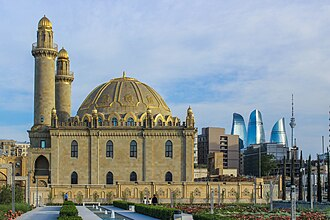

Общие сведения
La mosquée Taza Pir est une mosquée de Bakou, en Azerbaïdjan. Sa construction a commencé en 1905 et s'est achevée en 1914. L'idée de la mosquée ainsi que son financement ont été fournis par un philanthrope azéri, une femme, Nabat Khanum Achurbeyova (Achurbeyli).
مسجد طازه بير - هو مسجد تاريخي يقع في مقاطعة آبشوران في أذربيجان يتجاوز عمره القرن.
The Taza Pir Mosque is a Shia Islam mosque, located in Baku, Azerbaijan. Its construction began in 1905 and was finished by 1914. The concept for the mosque as well as its financing was provided by an Azeri female philanthropist, Nabat Khanum Ashurbeyova (Ashurbeyli).
Taze Pir Camii, Azerbaycan'ın başkenti Bakü'de bulunan bir camidir. Yapımı 1905'te başladı ve 1914 yılına kadar tamamlandı. Caminin fikri ve finansmanı bir Azeri yardımsever olan Nebat Hanım Aşurbeyova'ya (Aşurbeyli) aittir.
Die Tezepir-Moschee befindet sich in der aserbaidschanischen Hauptstadt Baku.
La mezquita Taza Pir es una mezquita en Bakú, Azerbaiyán. La idea de la construcción de la mezquita y la financiación fue proporcionada por una filántropa, una mujer, Nabat Ashurbeyli.
La Moschea Taza Pir è una moschea a Baku, in Azerbaigian. La costruzione della moschea iniziò nel 1905 sul progetto dell'architetto Ziverbey Akhmedbeyov e fu completata nel 1914. L'idea per costruire la moschea e il suo finanziamento furono forniti da una donatrice azera, Nabat Ashurbeyli. La Moschea di Taza Pir è la più grande moschea di Baku. Si trova nel centro della città ed è visibile quasi ovunque, soprattutto dal mare. Una volta sul posto di questo edificio era una moschea ad un piano.
На карте
Документы и ссылки
- Wikipédia — Français
- Wikipédia — العربية
- Wikipédia — English
- Wikipédia — Türkçe
- Wikipédia — Deutsch
- Wikipédia — Español
- Wikipédia — Italiano
- Wikipédia — Русский
- Wikidata — Q2096562
Данные: Викиданные (CC0), обновляются каждые 3 месяца. Год — самая ранняя известная дата постройки здания: для здания, ставшего мечетью позже (как Айя-София), это год постройки исходного здания. Фото: Викисклад, автор и лицензия — на странице каждой фотографии.